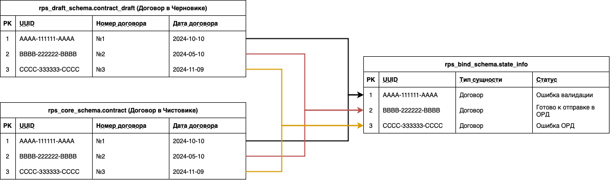

1. [SSM] Черновик и Чистовик
1. Введение
1.1. Общая информация
| Наименование продукта |
|
| Ответственный за продукт | - |
| Ответственный за тех.реализацию продукта | |
| Ответственный за документ | Системный аналитик Рустам Алиев |
| Тип продукта и операционная система | Web desktop |
| Epic |
|
2. SSM Описание
2.1. Введение в проблематику
На данный момент сервис AccOrd излишне усложнен тем, что большое кол-во "логики" сильно разнесено по функциональным частям проекта, причем часть этой логики, необходимой для решения задач и пользовательских потребностей дублируется.
Причем при появлении новых БФТ, возникновении багов и тд, необходимо дорабатывать данную "логику" во всех местах, а также поддерживать функциональность в работоспособном и актуальном состоянии, что увеличивает нагрузку на аналитику, разработку и тестирование.
В данной статье предлагаю рассмотреть следующую проблему:
В системе AccOrd имеется излишняя валидация сущностей, которая на данный момент обеспечивается следующими "функциональностями":
- Схемы по валидатору
- rps_core_schema
- Статусная модель
На данный момент в сервисе AccOrd имеется концептуальная проблема (и очень тонкий момент), который является первоисточником причин, из-за которых сервис AccOrd излишне устранен.
Историческая справка
В самом начале проекта была принята концепция "Черновик" и "Чистовик": rps_draft_schema и rps_core_schema, - соответственно.
Концепция заключалась в следующем:
В Черновик попадают все данные, получаемые из СИ. Поскольку было требование к сервису, согласно которому необходимо сохранять вообще все данные без учета ФЛК и правил валидации, Черновик не должен быть с ограничениями (на уровне БД).
Чистовик же наоборот должен хранить в себе только проверенные и валидные с точки зрения ОРД и ЕРИР (РКН) данные.
Однако у концепции "Черновик" и "Чистовик" всегда была следующая концептуальная проблема: у одной и той же записи в разных схемах один статус (см рис)

Риторический вопрос: как запись, находясь, в чистовике может быть в статусе "Ошибка валидации"?
Получается, что гарантом валидности сущности и ее готовности к отправке в ОРД является не наличие "Чистовика", а наличие опресненного статуса.
И ведь так оно и есть. На данный момент в API GET методах, которые вызываются для визуализации данных при просмотре данных в режиме отправки в ОРД, производится отбор данных из rps_core_schema (Чистовика), но поскольку доверять ему нельзя, на отобранные записи также накладываются условия согласно статичной модели.
2.2. Корневая суть проблемы
Чистовик - rps_core_schema - является лишним в сервисе AccOrd.
Наличие излишней схемы в итоге привело к ряду слудующих проблем, оказывающих большое влияние не только на саму систему AccOrd, но и на ее команду, которая занимается развитием и поддержкой сервиса.
Проблемы-"следствие":
- Есть дублирующая логика: Схемы валидатора = Ограничениям таблиц (в rps_core_schema)
- Лишняя нагрузка: перенос данных из Черновика в Чистовик
- Неоднозначность: один статус на два состояния
- Переусложнение: в два раза больше лишних таблиц, в два раза больше API GET методов, - что приводит к большим временным затратам на поддержку и доработки.
- Отсутствие унификации: Ответ API GET методов из draft и из core отличается, - что в итоге усложняет работу FE
Исходя из всего ранее описанного, хочется сделать вывод: наличие rps_core_schema не является обязательным, усложняет сервис дополнительной дублирующей логикой, обременяет на дополнительные и "ненужные" доработки.
В свое время rps_core_schema была введена в сервис AccOrd для обеспечения следующей концепции: В "Чистовике" гарантированном лежат полностью валидные данные, которые соответствуют требованиям ОРД и ЕРИР. Однако стоит отметить, что наличие определенного статуса делает то же самое.
2.3. Концептуальная модель
Необходимо:
- произвести постепенное упразднение rps_core_schema.
На данный момент на данной схеме завязано следующее:
- Перенос данных из "Черновика в Чистовик" (+ присвоение того самого статуса "Готово к отправке в ОРД"
- Чтение данных для последующей визуализации на интерфейсе при просмотре в режиме отправки даных в ОРД происходит при помощи: чтение из rps_core_schema + статусная модель
- Отправка данных в ОРД производится при помощи: отбор данных из rps_core_schema + статусная модель
- Формирование слепка производится при начале FLOW по отправке данных в ОРД, "копирование" данных производится из rps_core_schema
Предлагаемое решение:
- производить везде работу с данным не ориентируясь на Чистовик (rps_core_schema), а ориентироваться на Статусную Модель
Концепция реализации:
Постепенное "избавление" от rps_core_schema в описанных ранее функциональных частях проекта
План реализации:
RKN-5778
-
61. [СТ] Вне БФТ - Упразднение rps_core_schema. Часть 1: API GET методы для UI
В работе
- Перевести API GET методы "Чистовика" на "Черновик", оставив имеющиеся условия по статусам
- Перевести отправку данных на чтение "Черновик", оставив имеющиеся условия по статусам
- Перевести формирование слепка на "Черновик"
- Перевести отправку в ОРД на rps_draft_schema с соблюдением всех имеющихся условий, которые необходимым для отправки в ОРД
- Упразднить Перенос данных из черника в чистовик, дополнив реализацию валидатора переходом в конечный статус "Готово к Отправке в ОРД"
- Убедиться, что rps_core_schema более нигде не используется
- В случае чего доработать
- Удалить rps_core_schema
- Перевести DELTA_CHECK на rps_draft_schema вместо rps_core_schema
2.4. Риски. Реалии. Приоритеты
{Перечислить риск реалии приоритеты + предложить декомпоизровать }
2.5. Согласование
{Перечень заинтересованных лиц}